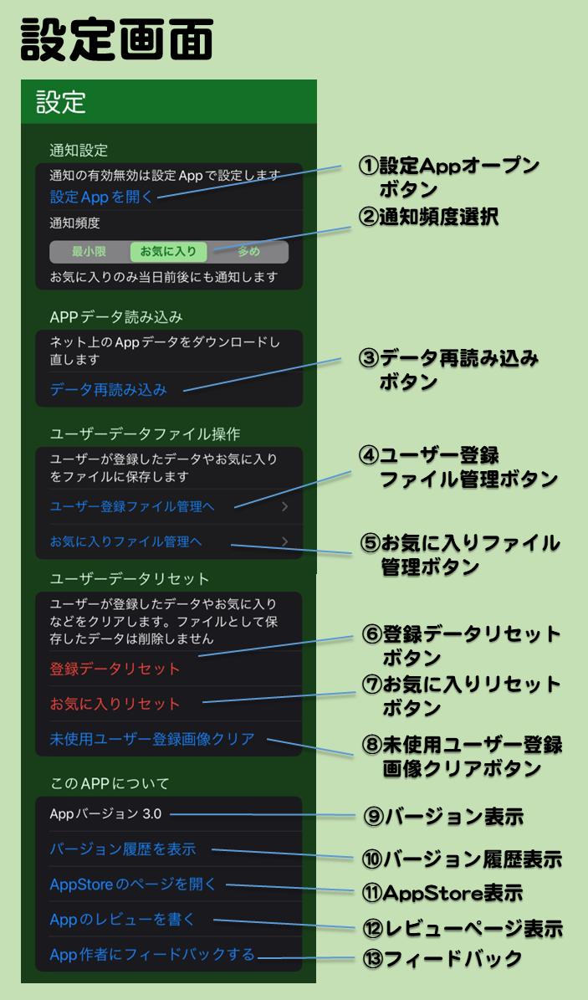

設定画面とは
メイン画面などで画面下の歯車アイコンをタップして移動してくる画面です。通知の設定や、登録データの保存、読み込みやリセットなどができます。
画面の説明
①設定Appオープンボタン
通知設定の変更のために設定Appを開きます。通知の有効・無効を切り替えたいときや通知音のON/OFFを切り替えたいときに使います。
通知音が気になるときはこの設定でサウンドをOFFにしてください。
②通知頻度選択
通知頻度を選択できます。
最小限...誕生日やイベント日の当日のみ通知します。
お気に入り...お気に入りのデータのみ当日前後にも通知します。
多め...すべてのデータで当日前後にも通知します。
当日前後の通知の例
誕生日... 誕生後1か月後、2か月後など(1年間)
イベント日...イベント1年前、2年前など
共通...その年の誕生日・イベント日の1か月前、1週間前など
③データ再読み込みボタン
Appデータをネットから再読み込みします。画像やデータが正しく読み込みできてないように見える時に押してください。
④ユーザー登録ファイル管理ボタン
ユーザー登録データをファイルに保存したり読み出したりできるユーザー登録ファイル管理画面を表示します。
⑤お気に入りファイル管理ボタン
お気に入りデータをファイルに保存したり読み出したりできるお気に入りファイル管理画面を表示します。
⑥登録データリセットボタン
現在Appに登録されているユーザーデータをリセットします。保存したファイルは消えません。
⑦お気に入りリセットボタン
現在Appに設定されているお気に入りをリセットします。保存したファイルは消えません。
⑧未使用ユーザー登録画像クリアボタン
アイコン画像として追加したけれど現在は使われていない画像を一括クリアできます。現在使われているアイコン画像はクリアされません。
⑨バージョン表示
今使っているAppのバージョン番号を表示します。AppStore にある最新のバージョンと同じか確認できます。
⑩バージョン履歴表示ボタン
今までのバージョン毎の変更内容の履歴を表示できます。
⑪AppStore表示ボタン
AppStoreの本Appのページを表示できます。
⑫レビューページ表示ボタン
AppStoreのレビューページを開いてレビューをすることができます。
⑬フィードバックボタン
メールAppを開いて本アプリの作者にメールでフィードバックできます。